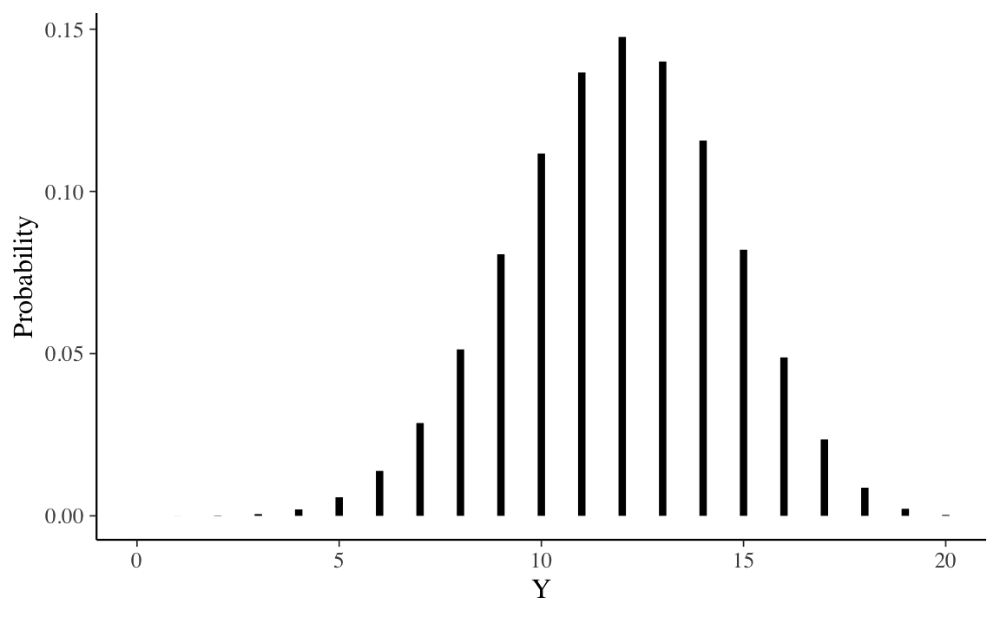
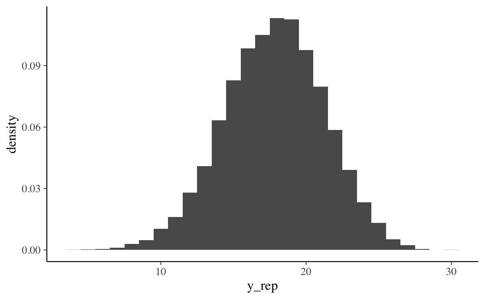
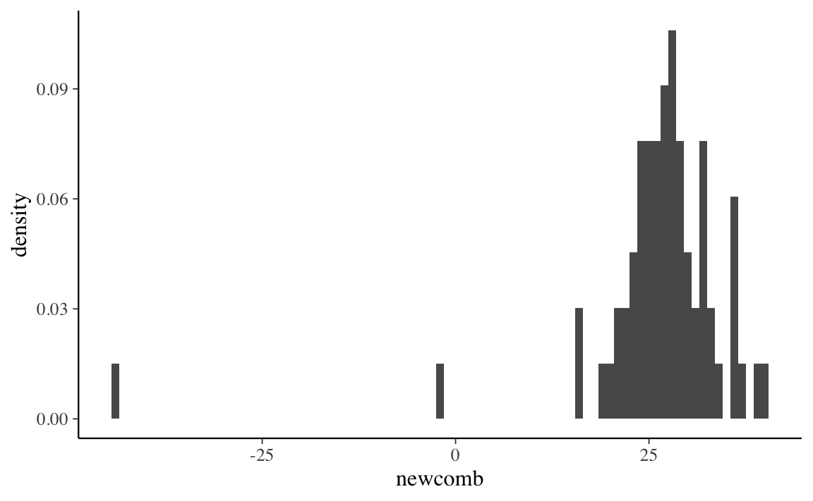
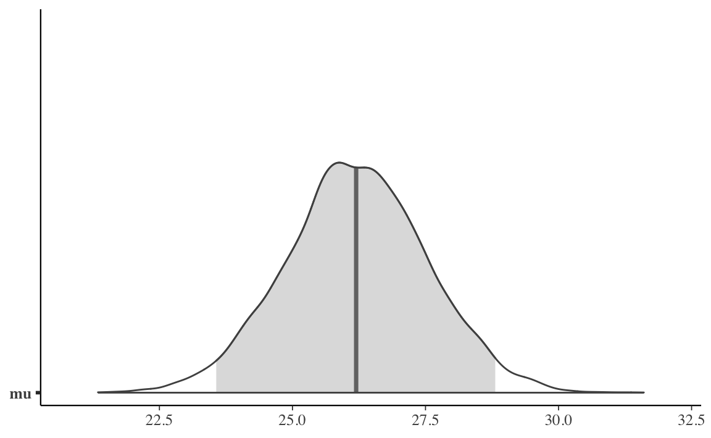
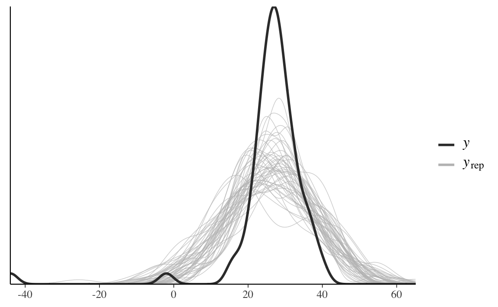
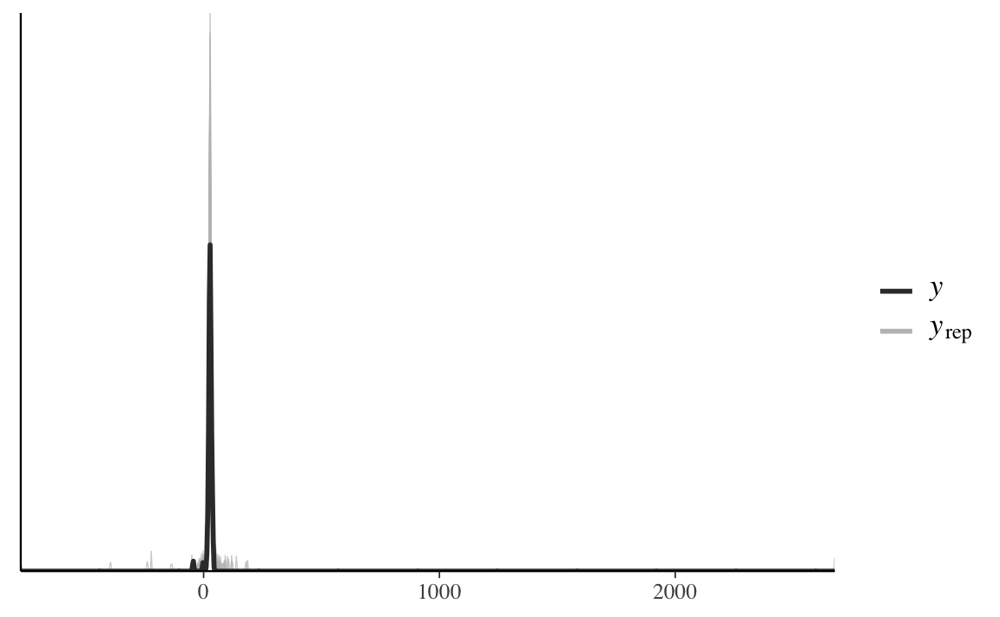
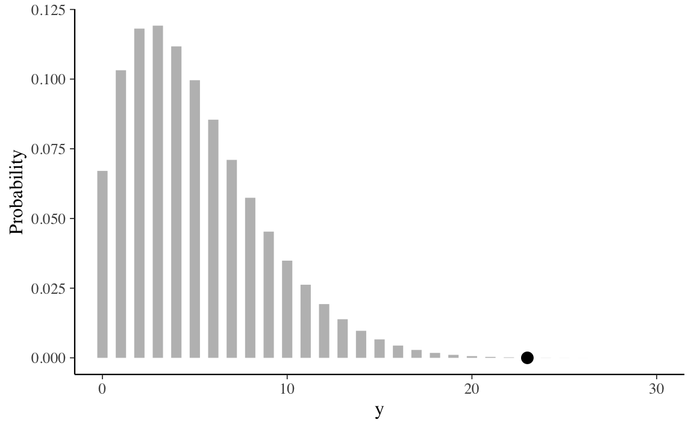
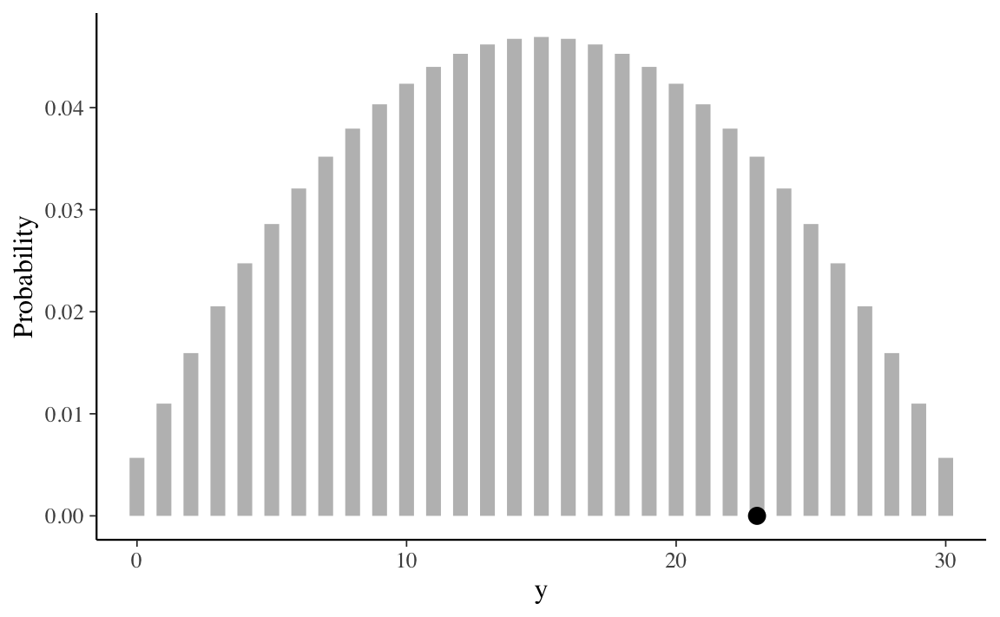

Capitolo 10 La predizione bayesiana
Oltre ad una sintesi della distribuzione a posteriori attraverso il computo di indici caratteristici e alla verifica di ipotesi, un altro compito dell’analisi bayesiana è la predizione di nuovi dati futuri. Dopo aver osservato i dati di un campione e dopo avere ricavato le distribuzioni a posteriori dei parametri, è infatti possibile ottenere delle indicazioni sulle proprietà di dati futuri. L’uso più immediato della stima della distribuzione dei possibili valori futuri della variabile di esito è la verifica del modello. Infatti, il modo più diretto per testare un modello è quello di utilizzare il modello per fare previsioni sui possibili dati futuri per poi confrontare i dati predetti con i dati effettivi. Questa pratica va sotto il nome di controllo predittivo a posteriori. In questo capitolo ci focalizzeremo sul problema della predizione bayesiana esaminando il caso più semplice, ovvero lo schema beta-binomiale. In seguito estenderemo questa discussione al caso generale.
10.1 La distribuzione predittiva
Una volta costruita la distribuzione a posteriori del parametro \(\theta\), potremmo essere interessati a utilizzare il nostro modello statistico allo scopo di prevedere la probabilità di risultati futuri basandosi sui dati storici. L’obiettivo è andare oltre la comprensione di cosa è successo per arrivare a una migliore valutazione di quello che accadrà in futuro. Questo tipo di analisi inferenziale va sotto il nome di analisi predittiva. L’analisi predittiva utilizza i dati che sono già disponibili per sviluppare un modello che può essere usato per prevedere i valori di dati diversi o nuovi.
L’esempio che considereremo nei dettagli riguarda il caso beta-binomiale, nel quale la distribuzione a priori per il parametro \(\theta\) (probabilità di successo) è una distribuzione Beta, la verosimiglianza è binomiale e i dati sono costituiti dal numero \(y\) di successi in \(n\) prove Bernoulliane indipendenti. Nell’esempio che discuteremo useremo un’altra volta i dati del campione di pazienti clinici depressi di Zetsche, Bürkner, and Renneberg (2019) – si veda l’Appendice ??. Supponendo di volere esaminare in futuro altri \(m\) pazienti clinici, ci chiediamo: quanti di essi manifesteranno una depressione grave?
Siamo interessati a predire i risultati che si potrebbero osservare in nuovi campioni di \(m\) osservazioni. Denotiamo con \(\tilde{y}\) la manifestazione della variabile casuale \(\tilde{Y}\). In un nuovo campione di \(m\) osservazioni, \(\tilde{y}\) potrà assumere il valore \(\tilde{y}_1\), in un altro campione potrà assumere il valore \(\tilde{y}_2\), e così via. Siamo interessati a descrivere la distribuzione predittiva a posteriori \(p(\tilde{Y} = \tilde{y} \mid Y = y)\), ovvero, siamo interessati a descrivere la verosimiglianza relativa di ciascuno di questi possibili valori.
Nel caso dell’esempio in discussione, la distribuzione di \(\tilde{Y}\) dipende da \(\theta\) e ciò che sappiamo di \(\theta\) è sintetizzato nella distribuzione a posteriori. Usando la regola della catena, possiamo scrivere la distribuzione congiunta di \(\tilde{Y}\) e \(\theta\) nel modo seguente
\[\begin{equation} p(\tilde{Y} = \tilde{y}, \theta \mid Y = y) = p(\tilde{Y} = \tilde{y} \mid \theta) p(\theta \mid Y = y). \end{equation}\]
La distribuzione predittiva a posteriori può essere ottenuta integrando rispetto a \(\theta\) la distribuzione congiunta:
\[\begin{equation} p(\tilde{y} \mid y) = \int_{\theta} p(\tilde{y} \mid \theta) p(\theta \mid y) \,\operatorname {d}\!\theta. \tag{2.6} \end{equation}\]
Nel caso dello schema beta-binomiale, la funzione \(p(\tilde{y} \mid \theta)\) è binomiale di parametri \(m\) e \(\theta\), e la distribuzione a posteriori \(p(\theta \mid y)\) è \(\mbox{Beta}(\alpha + y, \beta + n - y)\). Risolvendo l’integrale otteniamo:
\[\begin{align} p(\tilde{y} \mid y) &= \int_0^1 p(\tilde{y} \mid \theta) p(\theta \mid y)\,\operatorname {d}\!\theta \notag\\ &= \int_0^1 \begin{pmatrix}m\\\tilde{y}\end{pmatrix} \theta^{\tilde{y}} (1-\theta)^{m-\tilde{y}} \, \mbox{Beta}(a+y,b+n-y) \, d\theta \notag\\ &= \begin{pmatrix}{m}\\\tilde{y}\end{pmatrix} \int_0^1 \theta^{\tilde{y}} (1-\theta)^{m-\tilde{y}} \frac{1}{B(a+y, b+n-y)}\theta^{a+y-1}(1-\theta)^{b+n-y-1}\notag\\ &= \begin{pmatrix}{ m }\\\tilde{y}\end{pmatrix} \frac{1}{B(a+y, b+n-y)}\int_0^1 \theta^{\tilde{y}+a+y-1}(1-\theta)^{m-\tilde{y}+b+n-y-1}\notag\\ &= \begin{pmatrix}{ m }\\\tilde{y}\end{pmatrix} \frac{B(\tilde{y}+a+y,b+n-y+m-\tilde{y})}{B(a+y, b+n-y)} \; . \tag{10.1} \end{align}\]
In conclusione, per lo schema beta-binomiale, la distribuzione predittiva a posteriori è
\[\begin{equation} f(\tilde{y} \mid y) = \binom{m}{\tilde{y}} \frac{B(a+ y + \tilde{y}, b + n - y + m - \tilde{y})}{B(a+y, b+n-y)}, \tag{10.2} \end{equation}\]
ovvero, corrisponde ad una distribuzione di probabilità discreta chiamata distribuzione beta-binomiale di parametri \(m\), \(\alpha+y\) e \(\beta+n-y\).
Nell’esempio che stiamo discutendo, relativo allo studio di Zetsche, Bürkner, and Renneberg (2019), la verosimiglianza è binomiale, i dati sono costituiti da 23 successi su 30 prove e la distribuzione a priori su \(\theta\) è \(\mbox{Beta}(2, 10)\). Di conseguenza, la distribuzione a posteriori è \(\mbox{Beta}(25, 17)\). Vogliamo calcolare la distribuzione predittiva a posteriori per un nuovo campione, poniamo, di \(m = 20\) osservazioni.
In base alla (10.2) sappiamo che la distribuzione predittiva a posteriori è una distribuzione beta-binomiale di parametri \(m\), \(\alpha+y\) e \(\beta+n-y\), dove \(m\) è il numero di prove nel nuovo campione, \(\alpha\) e \(\beta\) sono i parametri della distribuzione a priori, e \(y\) e \(n\) sono le proprietà del campione corrente. Nel caso dell’esempio in discussione, \(m = 20\), \(\alpha = 2 + 23 = 25\), \(\beta = 10 + 30 - 23 = 17\). Possiamo svolgere i calcoli con le funzioni del pacchetto extraDistr. Un grafico della distribuzione predittiva a posteriori si ottiene nel modo seguente:
prob <- extraDistr::dbbinom(0:20, 20, 25, 17)
tibble(Y=0:20, Probability = prob) %>%
ProbBayes::prob_plot(Color = "black")
La distribuzione predittiva a posteriori illustrata nella figura precedente ci dice qual è la plausibilità relativa di osservare \(0, 1, \dots, 20\) successi su \(m = 20\) prove in un futuro campione di osservazioni, considerati i dati che abbiamo osservato nel campione corrente (23 successi in 30 prove), e tenuto conto delle nostre opinioni a precedenti sul valore \(\theta\) (ovvero, \(\mbox{Beta}(2, 10)\)).
Esaminando la distribuzione predittiva notiamo che, nei possibili campioni futuri di 20 osservazioni, il valore \(\tilde{y}\) più plausibile è 12. Tuttavia, \(\tilde{y}\) può assumere anche altri valori e la distribuzione predittiva ci informa sulla plausibilità relativa di ciascuno dei possibili valori futuri \(\tilde{y}\) – nel caso dell’esempio, \(\tilde{y}\) corrisponde al numero di pazienti clinici (su 20) che manifestano una depressione grave.
È desiderabile costruire un intervallo che contiene le realizzazioni della \(\tilde{Y}\) ad un livello specificato di probabilità. Supponiamo che il livello di probabilità richiesto sia 0.89. L’intervallo si costruisce aggiungendo valori \(\tilde{y}\) all’intervallo fino a che il contenuto di probabilità dell’insieme eccede la soglia di 0.89. La procedura è implementata nella funzione discint() del pacchetto LearnBayes. Per i dati dell’esempio otteniamo
LearnBayes::discint(cbind(0:20, prob), 0.89)
#> $prob
#> [1] 0.9144721
#>
#> $set
#> [1] 8 9 10 11 12 13 14 15 16da cui
\[ P(8 \leq \tilde{Y} \leq 16) = 0.9145. \]
10.2 La distribuzione predittiva a posteriori mediante simulazione
In situazioni dove è difficile derivare l’esatta distribuzione predittiva a posteriori è possibile simulare valori estratti da tale distribuzione. Consideriamo un esempio riferito all’esempio che stiamo discutendo. È possibile implementare una simulazione predittiva estraendo prima i valori del parametro (in questo caso, \(\theta\)) dalla distribuzione a posteriori. Con i valori del parametro così determinati, poi, si possono generare i valori delle possibili osservazioni future (nel caso presente, usando la distribuzione binomiale).
Per l’esempio che stiamo discutendo, la distribuzione a posteriori è una Beta(25, 17). Estaiamo 100,000 valori da tale distribuzione:
set.seed(12345)
a <- 2
b <- 10
n <- 30
y <- 23
pred_p_sim <- rbeta(1e5, a + y, b + n - y)
pred_y_sim <- rbinom(1e5, n, pred_p_sim)ppd <- table(pred_y_sim) / 1e5
ppd
#> pred_y_sim
#> 3 4 5 6 7 8 9 10 11 12
#> 0.00002 0.00004 0.00011 0.00036 0.00096 0.00241 0.00533 0.01000 0.01753 0.02882
#> 13 14 15 16 17 18 19 20 21 22
#> 0.04290 0.06110 0.07812 0.09476 0.10763 0.11311 0.10821 0.09765 0.07982 0.06185
#> 23 24 25 26 27 28 29 30
#> 0.04156 0.02536 0.01299 0.00630 0.00224 0.00064 0.00016 0.00002LearnBayes::discint(cbind(3:30, ppd), 0.89)
#> $prob
#> 12
#> 0.91553
#>
#> $set
#> 12 13 14 15 16 17 18 19 20 21 22 23
#> 12 13 14 15 16 17 18 19 20 21 22 23Confrontiamo i valori prodotti dalla simulazione con i valori esatti della distribuzione predittiva a posteriori:
prob30 <- extraDistr::dbbinom(0:30, 30, 25, 17)LearnBayes::discint(cbind(0:30, prob30), 0.89)
#> $prob
#> [1] 0.9152885
#>
#> $set
#> [1] 12 13 14 15 16 17 18 19 20 21 22 23La distribuzione predittiva a posteriori esatta è
tibble(Y=0:30, Probability = prob30) %>%
ProbBayes::prob_plot(Color = "black")
Una rappresentazione della distribuzione a posteriori ottenuta mediante simulazione è
tibble(Y=0:30, Probability = c(0, 0, 0, ppd)) %>%
ProbBayes::prob_plot(Color = "black")
Si noti la somiglianza tra le due distribuzioni.
In conclusione, per il caso che abbiamo discusso, la predizione bayesiana di una nuova osservazione è una distribuzione beta-binomiale di parametri \(m\), \(\alpha + y\), e \(\beta + n - y\), dove \(m\) è il numero di prove nel nuovo campione, \(\alpha\) e \(\beta\) sono i parametri della distribuzione a priori, e \(y\) e \(n\) sono le quantità della verosimiglianza. Ricordiamo che, nello schema beta-binomiale, la distribuzione a posteriori è una Beta di parametri \(\alpha + y\) e \(\beta + n - y\). Quindi, detto in un altro modo, nello schema beta-binomiale la distribuzione predittiva a posteriori è una distribuzione beta-binomiale i cui tre parametri sono \(m\) (la numerosità del nuovo campione) e i due parametri di forma della distribuzione Beta che descrive la distribuzione a posteriori.
10.3 La distribuzione predittiva a posteriori mediante MCMC
Il metodo basato su simulazione che abbiamo discusso nel paragrafo precedente viene utilizzato per ottenere un’approssimazione della distribuzione predittiva a posteriori quando l’inferenza bayesiana viene svolta mediante i metodi MCMC. Le stime delle possibili osservazioni future \(p(\tilde{y} \mid y)\), chiamate \(p(y^{rep} \mid y)\), si ottengono nel modo seguente:
- campionare \(\theta_i \sim p(\theta \mid y)\), ovvero campionare un valore del parametro dalla distribuzione a posteriori;
- campionare \(y^{rep} \sim p(y^{rep} \mid \theta_i)\), ovvero campionare il valore di un’osservazione dalla funzione di verosimiglianza condizionata al valore del parametro definito nel passo precedente.
Se i due passaggi descritti sopra vengono ripetuti un numero sufficiente di volte, l’istogramma risultante approssimerà la distribuzione predittiva a posteriori che, in teoria (ma non in pratica) potrebbe essere ottenuta per via analitica.
Esercizio 10.1 Riportiamo qui sotto il codice Stan per generare \(p(y^{rep} \mid y)\) nel caso dell’inferenza su una proporzione.
modelString = "
data {
int<lower=0> N;
int<lower=0, upper=1> y[N];
}
parameters {
real<lower=0, upper=1> theta;
}
model {
theta ~ beta(2, 10);
y ~ bernoulli(theta);
}
generated quantities {
int y_rep[N];
real log_lik[N];
for (n in 1:N) {
y_rep[n] = bernoulli_rng(theta);
log_lik[n] = bernoulli_lpmf(y[n] | theta);
}
}
"
writeLines(modelString, con = "code/betabin23-30-2-10.stan")
Si noti che nel nel blocco generated quantities sono state aggiunte le istruzioni necessarie per simulare \(y^{rep}\), ovvero, y_rep[n] = bernoulli_rng(theta). I dati dell’esempio sono:
data_list <- list(
N = 30,
y = c(rep(1, 23), rep(0, 7))
)Compiliamo il codice Stan
file <- file.path("code", "betabin23-30-2-10.stan")
mod <- cmdstan_model(file)ed eseguiamo il campionamento MCMC:
fit <- mod$sample(
data = data_list,
iter_sampling = 4000L,
iter_warmup = 2000L,
seed = SEED,
cores = 4L,
chains = 4L,
parallel_chains = 4L,
refresh = 0,
thin = 1
)
Per comodità, trasformiamo l’oggetto fit in un oggetto di classe stanfit:
stanfit <- rstan::read_stan_csv(fit$output_files())
Il contenuto dell’oggetto stanfit può essere esaminato nel modo seguente:
list_of_draws <- extract(stanfit)
print(names(list_of_draws))
#> [1] "theta" "y_rep" "log_lik" "lp__"
Dall’oggetto list_of_draws recuperiamo y_rep:
y_bern <- list_of_draws$y_rep
dim(y_bern)
#> [1] 16000 30
head(y_bern)
#>
#> iterations [,1] [,2] [,3] [,4] [,5] [,6] [,7] [,8] [,9] [,10] [,11] [,12] [,13]
#> [1,] 1 1 1 1 0 1 1 1 1 1 1 1 1
#> [2,] 0 1 0 1 1 1 0 0 1 0 0 0 0
#> [3,] 0 1 0 1 1 1 0 0 1 1 1 0 1
#> [4,] 1 0 0 1 1 0 0 1 0 1 1 1 0
#> [5,] 0 0 0 1 1 0 1 1 0 1 0 0 1
#> [6,] 1 1 1 1 1 1 0 1 0 1 1 1 0
#>
#> iterations [,14] [,15] [,16] [,17] [,18] [,19] [,20] [,21] [,22] [,23] [,24]
#> [1,] 0 1 1 1 1 1 0 0 1 0 1
#> [2,] 1 0 0 1 0 1 1 1 0 0 0
#> [3,] 0 0 1 0 1 1 0 1 0 0 1
#> [4,] 0 1 0 1 0 1 0 0 1 0 1
#> [5,] 0 0 1 1 1 1 1 0 1 0 1
#> [6,] 1 1 0 1 0 1 1 0 0 1 0
#>
#> iterations [,25] [,26] [,27] [,28] [,29] [,30]
#> [1,] 1 1 1 1 1 1
#> [2,] 0 1 1 0 1 1
#> [3,] 1 1 1 1 1 0
#> [4,] 0 1 1 0 0 1
#> [5,] 0 0 0 0 1 0
#> [6,] 0 0 1 0 1 1Dato che il codice Stan definisce un modello per i dati grezzi (ovvero, per ciascuna singola prova Bernoulliana del campione), ogni riga di y_bern include 30 colonne, ciascuna delle quali corrisponde ad un campione (\(n\) = 16000 in questa simulazione) di possibili valori futuri \(y_i \in \{0, 1\}\). Per ottenere una stima della distribuzione predittiva a posteriori p(y_rep), ovvero, una stima della probabilità associata a ciascuno dei possibili numeri di “successi” in \(m = 30\) nuove prove future, è sufficiente calcolare la proporzione di valori 1 in ciascuna riga:
tibble(y_rep = rowSums(y_bern)) %>%
ggplot(aes(x = y_rep, after_stat(density))) +
geom_histogram(binwidth = 1)
Si noti che questo istogramma non può essere confrontato con quello ottenuto nella simulazione precedente dato che \(m\) assume un valore diverso nelle due simulazioni.
10.4 I metodi per la valutazione del modello
10.4.1 Posterior predictive checks
La distribuzione predittiva a posteriori viene utilizzata per eseguire i cosiddetti controlli predittivi a posteriori (Posterior Predictive Checks, PPC). Nella distribuzione predittiva a posteriori, viene generato un campione di dati possibili futuri utilizzando le proprietà del modello adattato. È ovvio che tali dati possibili futuri devono almento essere coerenti con i dati del campione presente. I PPC eseguono un confronto grafico tra \(p(y^{rep} \mid y)\) e i dati osservati \(y\): confrontando visivamente gli aspetti chiave dei dati previsti futuri \(y^{rep}\) e dei dati osservati \(y\) è possibile determinare se il modello è adeguato.
Oltre al confronto visivo tra le distribuzioni \(p(y)\) e \(p(y^{rep})\) è anche possibile un confronto tra la distribuzione di varie statistiche descrittive, i cui valori sono calcolati su diversi campioni \(y^{rep}\), e le corrispondenti statistiche calcolate sui dati osservati. Vengono solitamente considerate statistiche descrittive quali la media, la varianza, la deviazione standard, il minimo o il massimo, ma confronti di questo tipo sono possibili per qualunque altra statistica.
Esercizio 10.2 Esaminiamo ora un set di dati che non seguono la distribuzione normale (Gelman, Hill, and Vehtari 2020). I dati corrispondono ad una serie di misurazioni prese da Simon Newcomb nel 1882 come parte di un esperimento per stimare la velocità della luce. A questi dati verrà (inappropriatamente) adattata una distribuzione normale. L’obiettivo dell’esempio è quello di mostrare come i PPC possono rivelare la mancanza di adattamento di un modello ai dati.
I PPC mostrano che il modo più semplice per verificare l’adattamento del modello è quello di visualizzare \(y^{rep}\) insieme ai dati effettivi. Iniziamo a caricare i dati:
library("MASS")
data("newcomb")Visualizziamo la distribuzione dei dati con un istogramma:
tibble(newcomb) %>%
ggplot(aes(x = newcomb, after_stat(density))) +
geom_histogram(binwidth = 1)
Creiamo un oggetto di tipo list dove inserire i dati:
data_list <- list(
y = newcomb,
N = length(newcomb)
)Il codice Stan per il modello normale è il seguente:
modelString <- "
data {
int<lower=0> N;
vector[N] y;
}
parameters {
real mu;
real<lower=0> sigma;
}
model {
mu ~ normal(25, 10);
sigma ~ cauchy(0, 10);
y ~ normal(mu, sigma);
}
generated quantities {
vector[N] y_rep;
for (n in 1:N) {
y_rep[n] = normal_rng(mu, sigma);
}
}
"
writeLines(modelString, con = "code/newcomb.stan")Adattando il modello ai dati
file <- file.path("code", "newcomb.stan")
mod <- cmdstan_model(file)
fit <- mod$sample(
data = data_list,
iter_sampling = 4000L,
iter_warmup = 2000L,
seed = SEED,
chains = 4L,
cores = 4L,
refresh = 0,
thin = 1
)otteniamo le seguenti stime dei parametri \(\mu\) e \(\sigma\):
fit$summary(c("mu", "sigma"))
#> # A tibble: 2 × 10
#> variable mean median sd mad q5 q95 rhat ess_bulk ess_tail
#> <chr> <dbl> <dbl> <dbl> <dbl> <dbl> <dbl> <dbl> <dbl> <dbl>
#> 1 mu 26.2 26.2 1.33 1.30 24.0 28.4 1.00 13305. 11189.
#> 2 sigma 10.9 10.8 0.958 0.943 9.40 12.5 1.00 12614. 10352.Trasformiamo fit in un oggetto stanfit:
stanfit <- rstan::read_stan_csv(fit$output_files())La distribuzione a posteriori di \(\mu\) è
mu_draws <- as.matrix(stanfit, pars = "mu")
mcmc_areas(mu_draws, prob = 0.95) # color 95% interval
Confrontiamo \(\mu\) con la media di \(y\):
mean(newcomb)
#> [1] 26.21212Anche se trova la media giusta, il modello non è comunque adeguato a prevedere le altre proprietà della \(y\). Estraiamo \(y^{rep}\) dall’oggetto stanfit:
y_rep <- as.matrix(stanfit, pars = "y_rep")
dim(y_rep)
#> [1] 16000 66I valori y_rep sono i dati della distribuzione predittiva a posteriori che sono stati simulati usando gli stessi valori \(X\) dei predittori utilizzati per adattare il modello. Il confronto tra l’istogramma della \(y\) e gli istogrammi di diversi campioni \(y^{rep}\) mostra una scarsa corrispondenza tra i due:
ppc_hist(data_list$y, y_rep[1:8, ], binwidth = 1)
Alla stessa conclusione si giunge tramite un confronto tra la funzione di densità empirica della \(y\) e quella di diversi campioni \(y^{rep}\):
ppc_dens_overlay(data_list$y, y_rep[1:50, ])
Generiamo ora i PPC per la media e il minimo della distribuzione:
ppc_stat_2d(data_list$y, y_rep, stat = c("mean", "min"))
Mentre la media viene riprodotta accuratamente dal modello (come abbiamo visto sopra), ciò non è vero per il minimo dela distribuzione. L’origine di questa mancanza di adattamento è il fatto che la distribuzione delle misurazioni della velocità della luce è asimmetrica negativa. Dato che ci sono poche osservazioni nella coda negativa della distribuzione, solo per fare un esempio, utilizzeremo ora un secondo modello che ipotizza una distribuzione \(t\) di Student:
modelString = "
data {
int<lower=0> N;
vector[N] y;
}
parameters {
real mu;
real<lower=0> sigma;
real<lower=0> nu;
}
model {
mu ~ normal(25, 10);
sigma ~ cauchy(0, 10);
nu ~ cauchy(0, 10);
y ~ student_t(nu, mu, sigma);
}
generated quantities {
vector[N] y_rep;
for (n in 1:N) {
y_rep[n] = student_t_rng(nu, mu, sigma);
}
}
"
writeLines(modelString, con = "code/newcomb2.stan")Adattiamo questo secondo modello ai dati.
file <- file.path("code", "newcomb2.stan")
mod <- cmdstan_model(file)
fit <- mod$sample(
data = data_list,
iter_sampling = 4000L,
iter_warmup = 2000L,
seed = SEED,
chains = 4L,
cores = 4L,
parallel_chains = 2L,
refresh = 0,
thin = 1
)
#> Running MCMC with 4 parallel chains...
#>
#> Chain 1 finished in 0.3 seconds.
#> Chain 2 finished in 0.3 seconds.
#> Chain 3 finished in 0.3 seconds.
#> Chain 4 finished in 0.3 seconds.
#>
#> All 4 chains finished successfully.
#> Mean chain execution time: 0.3 seconds.
#> Total execution time: 0.5 seconds.Per questo secondo modello il confronto tra la funzione di densità empirica della \(y\) e quella di diversi campioni \(y^{rep}\) risulta adeguato:
stanfit <- rstan::read_stan_csv(fit$output_files())
y_rep <- as.matrix(stanfit, pars = "y_rep")
ppc_dens_overlay(data_list$y, y_rep[1:50, ])
Inoltre, anche la statistica “minimo della distribuzione” viene ben predetta dal modello.
ppc_stat_2d(data_list$y, y_rep, stat = c("mean", "min"))
In conclusione, per le misurazioni della velocità della luce di Newcomb l’accuratezza predittiva del modello basato sulla distribuzione \(t\) di Student è chiaramente migliore di quella del modello normale.
10.5 Distribuzione predittiva a priori
Nella sezione precedente abbiamo visto come la distribuzione predittiva è stata usata per generare nuovi dati previsti futuri. Più precisamente, mediante la (2.6)
\[\begin{equation} p(\tilde{y} \mid y) = \int_{\theta} p(\tilde{y} \mid \theta) p(\theta \mid y) \,\operatorname {d}\!\theta\notag \end{equation}\]
abbiamo descritto la nostra incertezza sulla distribuzione di future osservazioni di dati, data la distribuzione a posteriori di \(\theta\), ovvero tenendo conto della scelta del modello e della stima dei parametri mediante i dati osservati. Si noti che, nella (2.6), \(\tilde{y}\) è condizionato da \(y\) ma non da ciò che è incognito, ovvero \(\theta\). La distribuzione predittiva a posteriori è ottenuta mediante marginalizzazione sopra i parametri incogniti \(\theta\).
In un modello bayesiano dove \(\theta\) ha una distribuzione a priori \(p(\theta)\) e per \(y\) possiamo definire la funzione di verosimiglianza \(p(y \mid \theta)\) possiamo scrivere la distribuzione congiunta \(p(y, \theta)\) come il prodotto della verosimiglianza e della distribuzione a priori:
\[ p(y, \theta) = p(y \mid \theta)p(\theta). \]
Una rappresentazione alternativa della distribuzione congiunta \(p(y, \theta)\) è
\[ p(y, \theta) = p(\theta \mid y)p(y) \]
Il primo termine in questo prodotto, la densità \(p(\theta \mid y)\), è la densità a posteriori di \(\theta\) date le osservazioni \(y\). Il secondo termine in questo prodotto, \(p(y)\), è la distribuzione predittiva a priori che rappresenta la distribuzione dei dati futuri previsti dal modello prima di avere osservato il campione \(y\). Se risulta che i dati \(y\) non sono coerenti con distribuzione predittiva a priori, questa è evidenza che il modello bayesiano non è specificato correttamente. In altre parole, questo ci dice che, in base al modello bayesiano così come è stato formulato, è improbabile che si verifichino i dati che sono stati effettivamente osservati. Ovviamente, questo vuol dire che, per i dati del campione, il modello è inadeguato.
In seguito vedremo come la distribuzione predittiva a priori possa essere facilmente ricavata se l’inferenza bayesiana viene svolta mediante i metodi MCMC. Qui consideriamo un esempio relativo ai dati di Zetsche, Bürkner, and Renneberg (2019) senza approfondire i dettagli computazionali. Lo scopo è solo quello di interpretare il risultato ottenuto.
Nel campione di Albert and Hu (2019) abbiamo osservato 23 successi in 30 prove. Nella discussione precedente abbiamo svolto l’aggiornamento bayesiano imponendo su \(\theta\) una distribuzione a priori \(\mbox{Beta}(2, 10)\). Ci poniamo il problema di costruire la distribuzione predittiva a priori per questo modello.
Nel caso di una verosimiglianza binomiale e di una distribuzione a priori Beta, la distribuzione predittiva a priori può essere costruita mediante la funzione LearnBayes::pbetap(). Con i dati dell’esempio, otteniamo
df <- tibble(
y = 0:30,
Probability = LearnBayes::pbetap(c(2, 10), 30, 0:30)
)
df %>%
ProbBayes::prob_plot(Color = "gray", Size = 3) +
geom_point(data = tibble(y = 23, Probability = 0), size = 3) 
La distribuzione predittiva a priori assegna livelli diversi di plausibilità a ciascuno dei possibili risultati del nostro esperimento casuale, ovvero all’osservazione di \(0, 1, \dots, 30\) successi in 30 prove Bernoulliane. Nella distribuzione predittiva a priori assegna ho evidenziato il punto \(y = 23\), ovvero il numero di successi che sono stati effettivamente osservati nel campione. Il grafico mostra che la distribuzione predittiva a priori assegna una plausibilità quasi nulla all’evento \(y = 23\), ovvero ai dati che sono stati effettivamente osservati. Questo indica chiaramente che la distribuzione a priori \(\mbox{Beta}(2, 10)\) non è adeguata per i dati che stiamo analizzando. Se viene invece utilizzata una distribuzione a priori debolmente informativa, come \(\mbox{Beta}(2, 2)\), la distribuzione predittiva a priori diventa:
df <- tibble(
y = 0:30,
Probability = LearnBayes::pbetap(c(2, 2), 30, 0:30)
)
df %>%
ProbBayes::prob_plot(Color = "gray", Size = 3) +
geom_point(data = tibble(y = 23, Probability = 0), size = 3) 
In questo secondo caso al valore \(y\) osservato nel campione viene assegnata una plausibilità piuttosto alta. Ciò significa che una \(\mbox{Beta}(2, 2)\) è adeguata quale distribuzione a priori.
Ricordo che, nell’analisi dei dati di Zetsche, Bürkner, and Renneberg (2019), la \(\mbox{Beta}(2, 10)\) è stata utilizzata quale distribuzione a priori solo per scopi didattici, ovvero per evidenziare le proprietà dell’aggiornamento bayesiano (la differenza tra la distribuzione a priori e la distribuzione a posteriori). La discussione presente mette però chiaramente in evidenza il fatto che la \(\mbox{Beta}(2, 10)\) non è una buona scelta per la distribuzione a priori: sarebbe invece più opportuno usare una \(\mbox{Beta}(2, 2)\).
Commenti e considerazioni finali
Questo capitolo discute la predizione bayesiana e ne mostra un’applicazione nel caso dei controlli predittivi a posteriori. A questo proposito è necessario notare un punto importante: un buona corrispondenza tra \(y\) e \(y^{rep}\) costituisce una condizione necessaria ma non sufficiente per la validità del modello. Infatti, i PPC non sono in grado di garantire la generalizzabilità del modello a nuovi campioni di dati. D’altra parte, invece, se i PPC mostrano un cattivo adattamento del modello ai dati previsti futuri, questo ci dice chiaramente che il modello è specificato in manera errata.